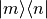
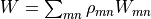
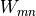
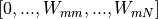

Quantum Simulations
qTools.QuantumToolbox.quasiProbabilities
Contains functions to calculate quasi-probability distributions (adapted from qutip).
Wigner(rho, vec[, g])
Wigner
An iterative method to evaluate the Wigner functions for the states  and use them in a weighted sum to calculate Wigner function of any arbitrary state.
HusimiQ(state, vec[, g])
HusimiQ
Q-function of a given state vector or density matrix at points vec + i * vec
_qfuncPure(psi, alphaMat)
_qfuncPure
Calculates the Q-function for a pure state.
An iterative method to evaluate the Wigner functions for the states and use them in a weighted sum to calculate Wigner function of any arbitrary state.
The Wigner function is calculated as  where  is the Wigner function for the density matrix .
In this implementation, for each row m, Wlist contains the Wigner functions Wlist = . As soon as one Wigner function is calculated, the corresponding contribution is added to the total Wigner function, weighted by the corresponding element in the density matrix .
rho (Matrix) – Density matrix or ket state.
vec (ndOrList) – An array (or list) to define the (coarse-grained) Phase space. This creates a square grid of the phase space.
g (float) – Scaling factor for a = 0.5 * g * (x + iy), default g = sqrt(2).
Values representing the Wigner-function calculated over the specified range [vec, vec].
ndarray
Examples
# TODO
rho (Matrix) – density matrix or ket state
Values representing the Q-function calculated over the specified range [vec, vec].
array
psi (Matrix) – a pure state
vec (ndOrList) – an array (or list) to define the (coarse-grained) Phase space. This creates a square grid of the phase space.
qTools.QuantumToolbox.qubitRotations
qTools.QuantumToolbox.thermodynamics